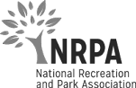
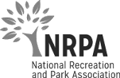
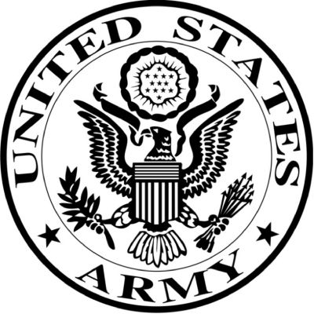
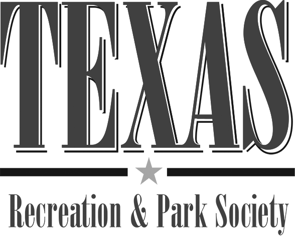
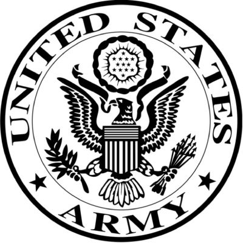
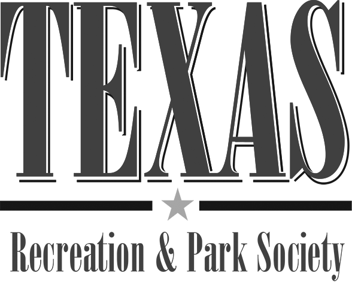

Juliene R. Hefter
Owner of Safety First Aquatics, the premier aquatic safety and educational company leading aquatic consultants to create safe and updated environments.
Schedule Consultation
Our Mission
Safety First Aquatics, LLC. is a premier aquatic safety and educational company. Founded in 2000, we are now one of the nation's leading aquatic consultants in the area of providing educational sessions, expert witness consulting and aquatic facility consulting. Our firm includes one of the most sought after and recruited public speakers in the area of customer service, staff training, lifeguard training, aquatic facility management and aquatic management and risk management. Our firm's owner, draws upon more than 30 years of experience in the management, operation and supervision of aquatic facilities. Our involvement in these projects has ranged from developing staffing plans, EAP's and manuals, training and supervising staff in all facets of aquatics operations and management as well as marketing and operations services.


About Safety First Aquatics
Safety First Aquatics, LLC offers services from staff training and development, facility review, staff observations, organizational assessment and audits, to the development of staffing and training programs, EAP's, manuals and websites. We bring leading edge management, supervision and training and other integral pool components to each project we undertake.
We pride ourselves on client retention, repeat business and the stamp of approval that only client referrals can convey. Headquartered in West Bend, Wisconsin and in Mesa, Arizona, Safety First Aquatics, LLC maintains solid relationships with other consultants and contractors and continues to set the standards in the aquatic industry across the United States through providing expert witness services, consulting services and educational opportunities for anyone in the aquatic arena.

Training
Safety First Aquatics, LLC provides assistance to aquatic facilities in the development of staffing plans, EAP's, staff manuals and staff training plans. We work with your team directly and create a custom plan based of the requirements you provide.
Expert Witness Services
We offer a wide variety of services to help prepare your case for trial. Whether your case involves a catastrophic injury such as a spinal cord injury resulting from a diving accident, or drowning at a pool or beach, let our water safety expert help prepare you for trial.
Presentations
Presenting to small groups and large, Juliene shares and teaches valuable lessons she has gained throughout her experience in the aquatic field. Serving in top leadership positions has given her insights on how to build a community of trust and efficiency.
Pool Operator Courses
Safety First Aquatics has two immersive programs that help pool operators exceed job performance. Both programs meet the needs of those working in public and semi-public recreational pool or water park facilities. The main difference is the speed in which the classes are completed.
 

 


